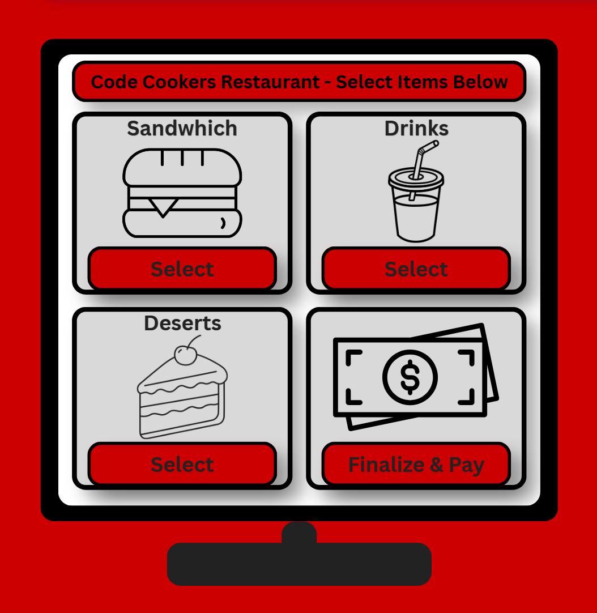

Group Project
Sandwich Maker
This project was a Python and HTML project focused on building a functional order system for a sandwich restaurant. The project provided experience with programming, group management, problem solving, and web development.
View on GitHub